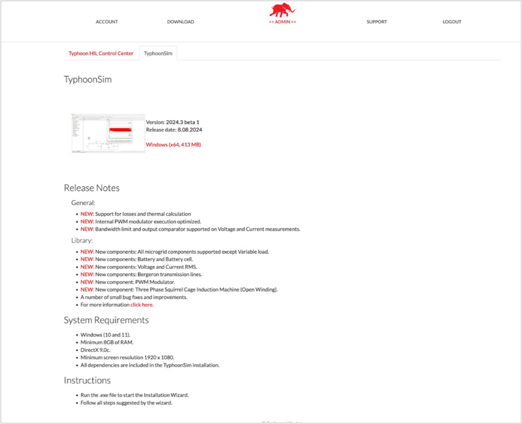
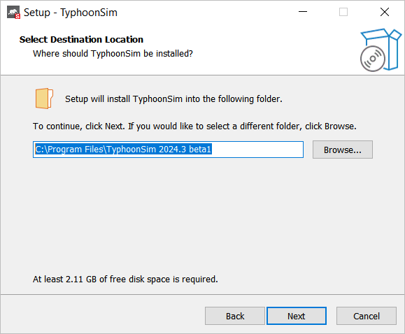
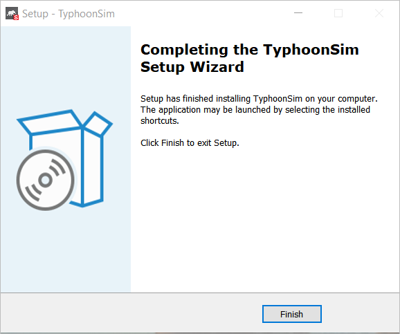
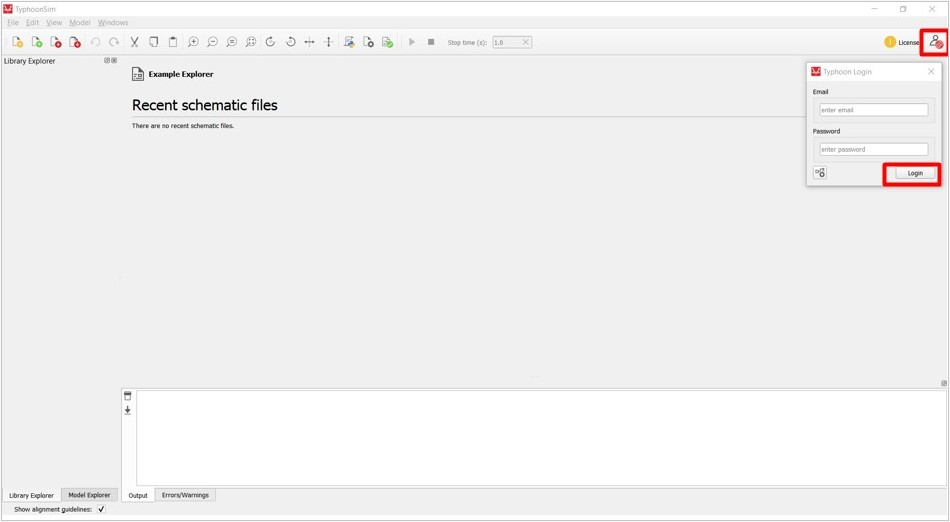
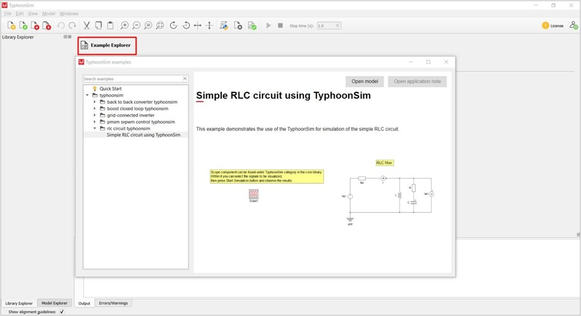
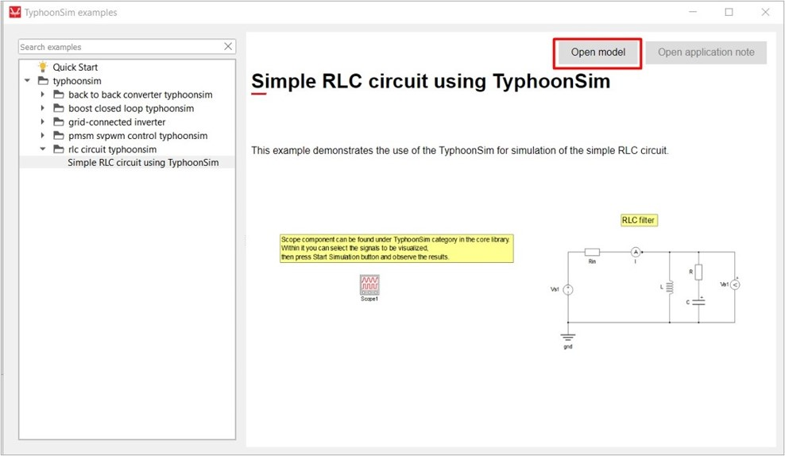
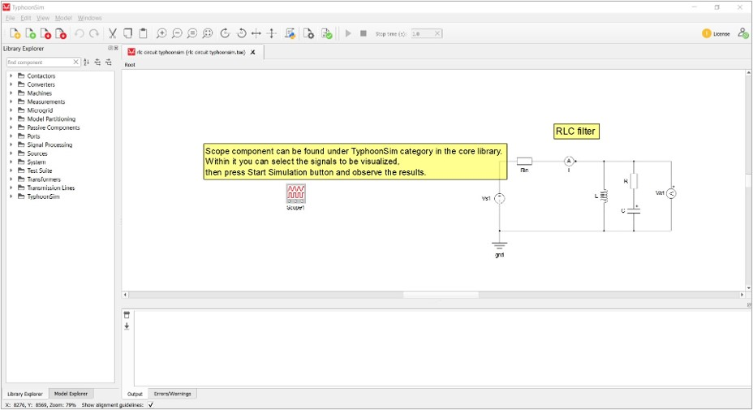
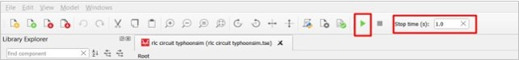
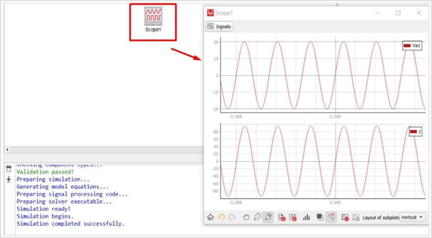

Quick Start: TyphoonSim Standalone
Guidelines for all necessary software requirements in order to run your first example model in TyphoonSim simulation.
Getting your License
Open an internet browser and navigate to TyphoonSim. Click on the Get a License button and fill in the form. After that, you will receive all the necessary information to your e-mail.
Software Download
Open an internet browser and navigate to the Subscription Portal.
If you already have an account (completed Getting your License step), you can log in by clicking on the Login button (Figure 1).

If you do not have a Typhoon HIL customer account, please go back to the first step Getting your License.
By logging in with a customer account, you can access the Download tab at the top of the screen (Figure 2).

The Typhoon HIL Download site consists of two sections (pages). There you can download the latest software and links to important documentation. In the TyphoonSim download section (Figure 3), you can download the latest version of TyphoonSim software and its appropriate dependencies.

Software Installation
- Log in to your Typhoon HIL account and download the latest version of the TyphoonSim installation file from the TyphoonSim tab in the Subscription Portal.
- Start the installation. Note: During installation, you can select the destination folder for the TyphoonSim application. By default, it will be installed to a new folder at C:\Program Files\TyphoonSim [software version number] (see Figure 4).
Figure 4. Destination Window 
- At the end of the installation process, you will receive a message stating you
can now launch TyphoonSim via the installed shortcuts. Just click
Finish.
Figure 5. Complete the installation by clicking on Finish 
Logging in to TyphoonSim Software
After starting the software, you must log in with the credentials you used in the first step (Getting your License) in order to activate your license. Click on the login icon in the top right corner (Figure 6) and log in with your e-mail and password.

After logging in, you must restart the software to apply the license. If you logged in correctly, after restarting the software, the Login button will appear green.
Running your first simulation
After you have logged in and started the software again, you are ready to run your first simulation. We will use a model of a simple RLC circuit to get you familiar with the TyphoonSim environment.
- After opening TyphoonSim, select the Example Explorer icon and find the
RLC circuit model.
Figure 7. Simple RLC circuit example in TyphoonSim 
Select the Open model button.
Figure 8. How to open an example model 
The model will now open in Schematic Editor. If this is your first time opening Schematic Editor, it may take some time while libraries are loaded.
Figure 9. Simple RLC circuit model in Schematic Editor 
To run the simulation, set the Stop time and press the Start Simulation button.
Figure 10. Start Simulation button and Stop time settings 
When the simulation is completed successfully, you can observe the results within a Scope component.
Figure 11. Observing results within a Scope component 